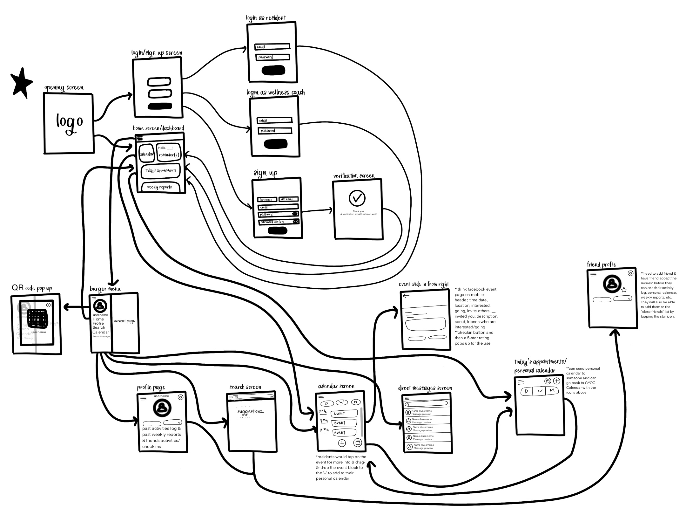
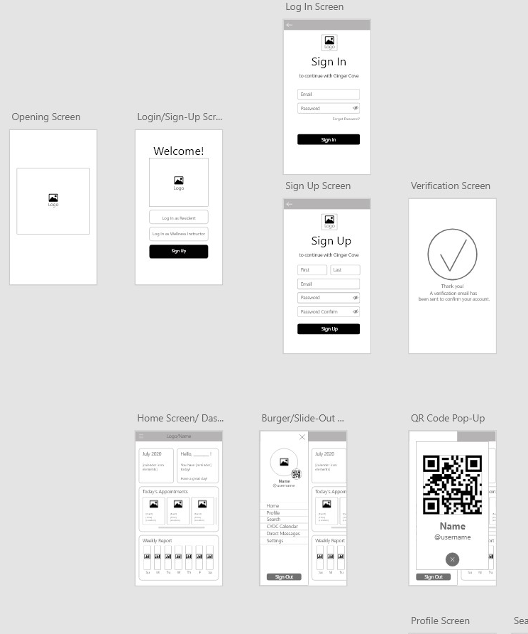
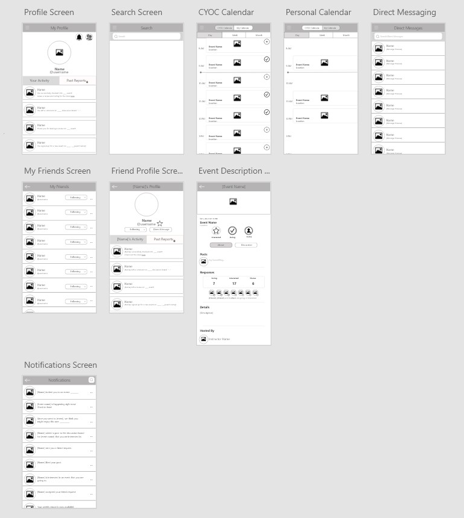

Ginger Cove is an assisted living community in Annapolis, MD that houses 350 residents
of 60 years of age and older. Ginger Cove offers unique events daily and allows their
residents to pursue their personal interests.
Ginger Cove wanted to reinvent the way they ran their programs. With many of their
record-keeping and event sharing on paper, they wanted to make things more convenient
by turning it digital and creating a mobile app. Furthermore, Wellness Director Alena
Daily wanted the app to serve as a holistic wellness tracker, record the
events the residents signed into and their emotional well being, and allow them to
connect more with the Ginger Cove community online.
Type
iOS Mobile App / Team Project
My Role
UI/UX Researcher, UI/UX Design
Software
Adobe XD
Collaborators
Team Lead: Ani Tansinda
Researchers & Designers: Manar Al-badarneh,
Timothy Yun, Gwangin Cho,
Kevin Zhao, Momina Khan, Jae Lee
Wellness Director: Alena Daily
Duration
3 months
The team is here to help build memory care.
For Residents
For Wellness Coach or Director
From Team Lead's Research
From Personal Research
Compiled tables to report to the team at weekly meetings
Map
Wireframe
 Designed by Katherine Vo
We created two separate log in portals for residents and wellness coaches.
Designed by Katherine Vo
Designed by Manar Al-badarneh & Katherine Vo
Designed by Ani Tansinda & Katherine Vo